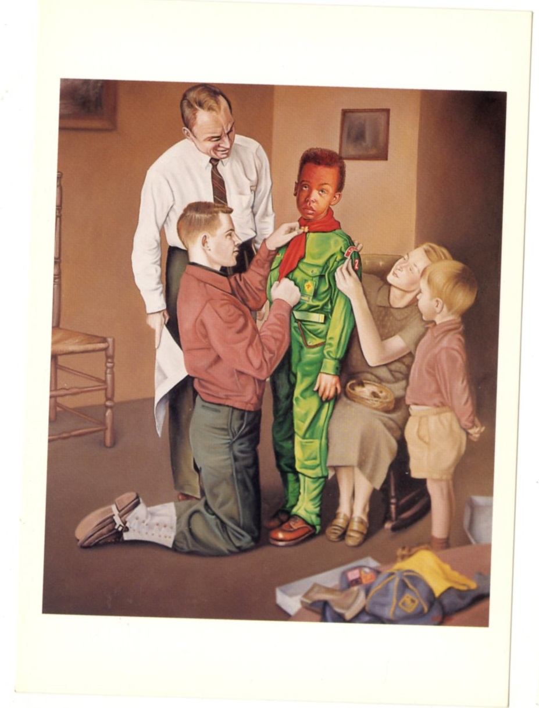
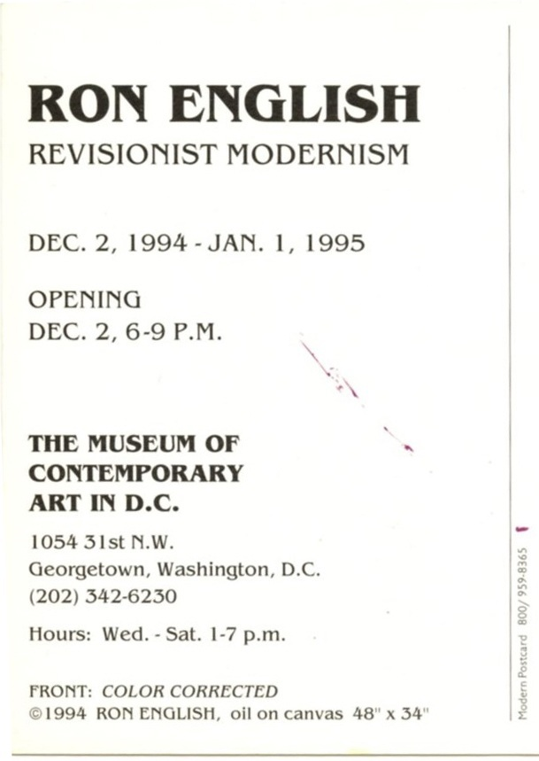
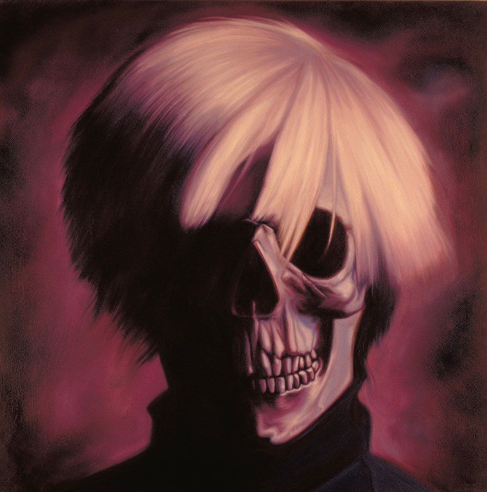
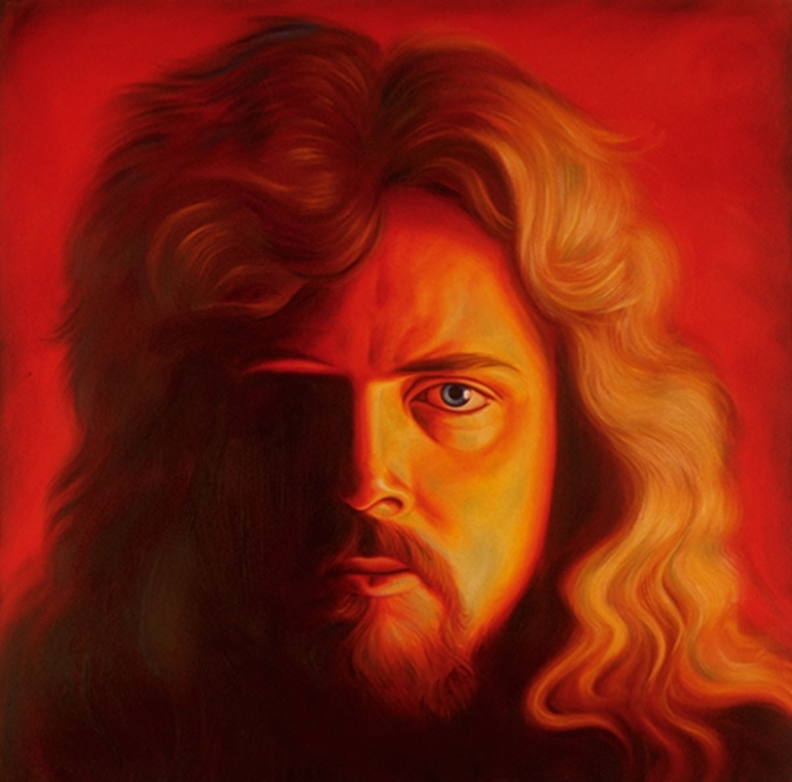
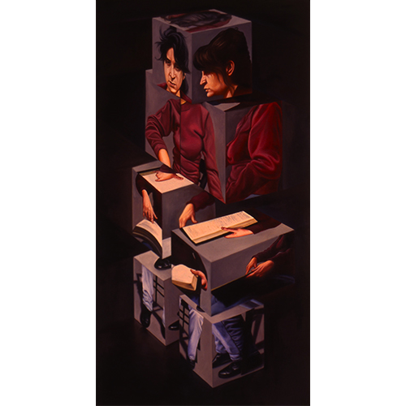

Revisionist Modernism
The Museum of Contemporary Art in D.C., Washington, D.C., 1994–1995.


Documented Works Associated with the Exhibition
The following titles are directly documented in the surviving exhibition card and contemporary press coverage. The exhibition card explicitly identifies Color Corrected as oil on canvas; the reviews name the other exhibited works without giving medium.

The Anti-Warhol, Panel 1

The Anti-Warhol, Panel 2

The Anti-Warhol, Panel 3

The Anti-Warhol, Panel 4

Hot Artist

Blue Period Action Painting

Harmonic Scream

Literal Cubism
Notes
The reverse side of the surviving exhibition card gives the venue as The Museum of Contemporary Art in D.C., lists the address as 1054 31st N.W. in Georgetown, and prints the exhibition dates as December 2, 1994–January 1, 1995.
That same card lists gallery hours as Wednesday through Saturday, 1:00–7:00 p.m., and identifies the image on the front as Color Corrected, 1994, oil on canvas, 48 × 34 in.
A notice in Where Washington, December 1994, refers to the exhibition as Revisionist Art History, reproduces 10,000 Surrealists, and gives the reception date as December 1, 1994, from 6:00 to 9:00 p.m.
The Georgetowner, December 9, 1994, refers to the show as “Revisionist Modernism: New Works by Ron English” at Clark & Company’s Museum of Contemporary Art and states that it continued through December 31, 1994.
Lee Fleming’s review “Joshing With the Masters” names additional works shown in the exhibition, including Luncheon on the Grass, Money Is the Root of All Art, The Anti-Warhol, and Ron in My Thoughts.
Because the surviving sources do not agree perfectly on the title and opening date, this page preserves the wording and dates as they appear in each documented source rather than harmonizing them.
Sources
- Exhibition card for Revisionist Modernism, The Museum of Contemporary Art in D.C., Washington, D.C., 1994–1995.
- Where Washington, December 1994, illustrated notice for Ron English’s Washington exhibition.
- “Ron English & Gale Fulton Ross,” The Georgetowner, December 9, 1994, p. 6.
- Lee Fleming, “Joshing With the Masters,” The Washington Post, January 6, 1995.